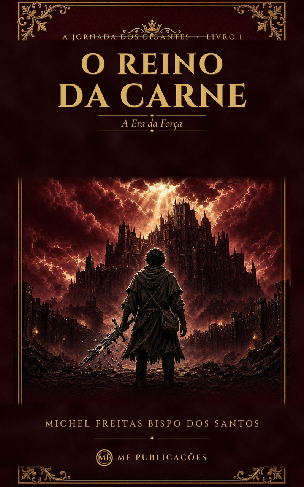

O Reino da Carne – A Era da Força
Elion recebe o chamado, parte de Bethel e entra no reino onde a força se disfarça de liberdade. Vale dos Ossos, Cidadela do Ferro, Coliseu de Gladius, Cidade das Sombras, Vale do Medo e o altar no Monte Moriah. Inclui o interlúdio O Arquiteto das Máscaras. Aqui o leitor descobre que a verdadeira força começa quando o coração se rende ao Rei.
A Era da Força. Uma alegoria cristã de caminhada, perigo e rendição.
O chamado veio do céu. O primeiro passo, porém, levou Elion a um reino onde a força que promete vitória também sabe aprisionar.
Em O Reino da Carne – A Era da Força, primeiro volume da trilogia A Jornada dos Gigantes, um jovem pastor deixa Bethel para atravessar o Vale dos Ossos, a Cidadela do Ferro, o Coliseu de Gladius e a Cidade das Sombras. Uma espada quebrada pesa em sua mão. Um inimigo de muitas máscaras já o observa. No altar do Monte Moriah, Elion descobre que a verdadeira força começa quando o coração se rende ao Rei.
Ficção alegórica cristã, com suspense e expectativa à maneira de O Peregrino: caminhada, perigo constante, tensão crescente e reviravoltas — e um Caderno de Jornada com fundamentação bíblica, reflexões e aplicações ao fim da leitura.
O que você recebe
- O volume 1 completo da trilogia A Jornada dos Gigantes
- Prólogo, 7 capítulos e o interlúdio O Arquiteto das Máscaras
- Caderno de Jornada: fundamentação bíblica, reflexões e aplicações
- Formato: PDF e ePub
- 174 páginas (PDF original)
- Acesso enviado por e-mail após a confirmação do pagamento, pela Kiwify
Para quem é
- Quem gosta de ficção cristã alegórica e histórias de peregrinação
- Jovens e adultos que enfrentam a batalha entre a força própria e a rendição a Cristo
- Leitores que querem acompanhar uma jornada de corpo, alma e espírito em forma de narrativa
- Grupos de leitura ou discipulado que desejam refletir com o Caderno de Jornada
- Autor
- Michel Freitas Bispo dos Santos
- Edição
- MF Publicações · primeira edição digital, 2026
- Série
- A Jornada dos Gigantes, livro 1 de 3
- Preço
R$ 39,90· R$ 29,90
Pagamento seguro pela Kiwify. Acesso enviado por e-mail após a confirmação. PDF e ePub. Garantia de 7 dias.